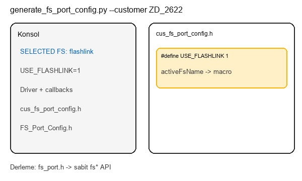
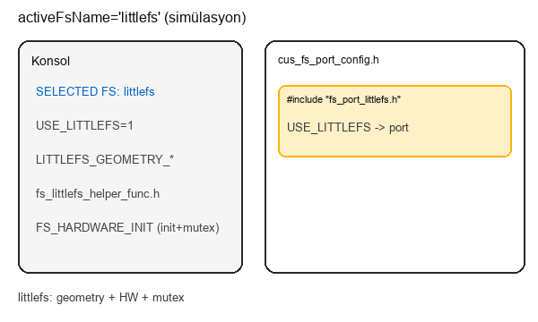

Input and output
Input
- `Customers/NAME/Fs/fs_config.json`
- `store.activeFsName` and selected `fsLib` branch
Output
- `Customers/NAME/Fs/cus_fs_port_config.h`
- `Customers/FS_Port_Config.h`
Customers/generate_fs_port_config.py converts customer JSON configuration into build-ready C headers and macros.
Invoked via command line; results appear in cus_fs_port_config.h and FS_Port_Config.h.
The generated header is the bridge between static app API and dynamic customer configuration.

flowchart TD
main["main()"] --> read["read fs_config.json"]
read --> map["map activeFsName to USE macro"]
map --> branch{activeFs}
branch --> FL[_append_flashlink_defines]
branch --> LF[_append_littlefs_defines]
branch --> FF[_append_flashfs_defines]
FL --> write1["write cus_fs_port_config.h"]
LF --> write1
FF --> write1
write1 --> write2["write FS_Port_Config.h"]
[Fallback call graph]
main
-> read fs_config.json
-> map activeFsName to USE macro
-> branch by active fs
-> _append_flashlink_defines
-> _append_littlefs_defines
-> _append_flashfs_defines
-> write cus_fs_port_config.h
-> write Customers/FS_Port_Config.h
--customer ZD_2622 + flashlink
When .\generate_fs_port_config.py --customer ZD_2622 is run with activeFsName: "flashlink":
Console shows SELECTED FS NAME: flashlink; cus_fs_port_config.h is generated with USE_FLASHLINK, flashlink port, HW driver include, and FS_HARDWARE_INIT macro.

activeFsName: "littlefs"
With activeFsName littlefs, console shows SELECTED FS NAME: littlefs; output includes USE_LITTLEFS, LITTLEFS_GEOMETRY_* macros, fs_littlefs_helper_func include, and FS_HARDWARE_INIT with Storage init + mutex create.

python Customers/generate_fs_port_config.py --customer ZD_2622
Input: Customers/ZD_2622/Fs/fs_config.json
Output: Customers/ZD_2622/Fs/cus_fs_port_config.h, Customers/FS_Port_Config.h